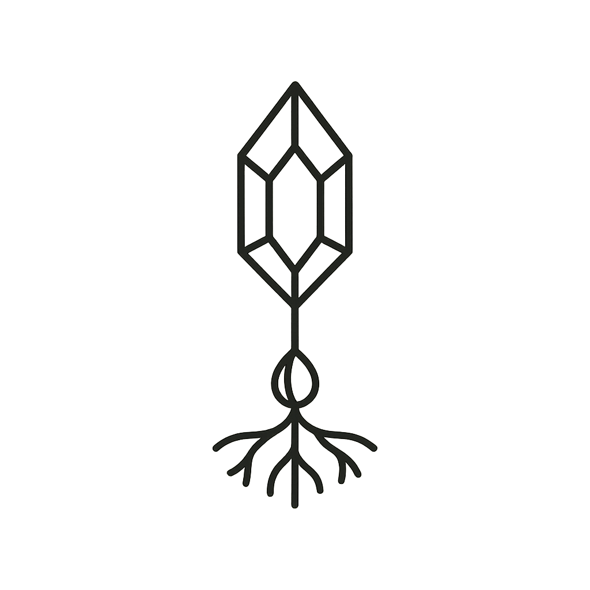
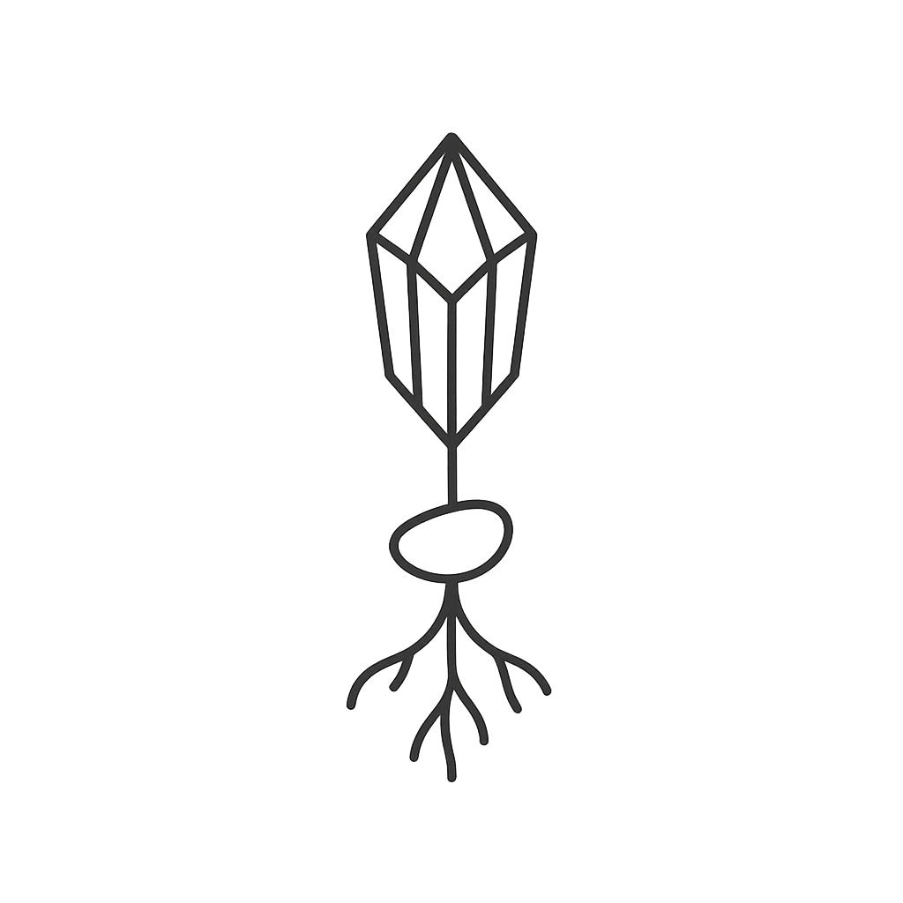
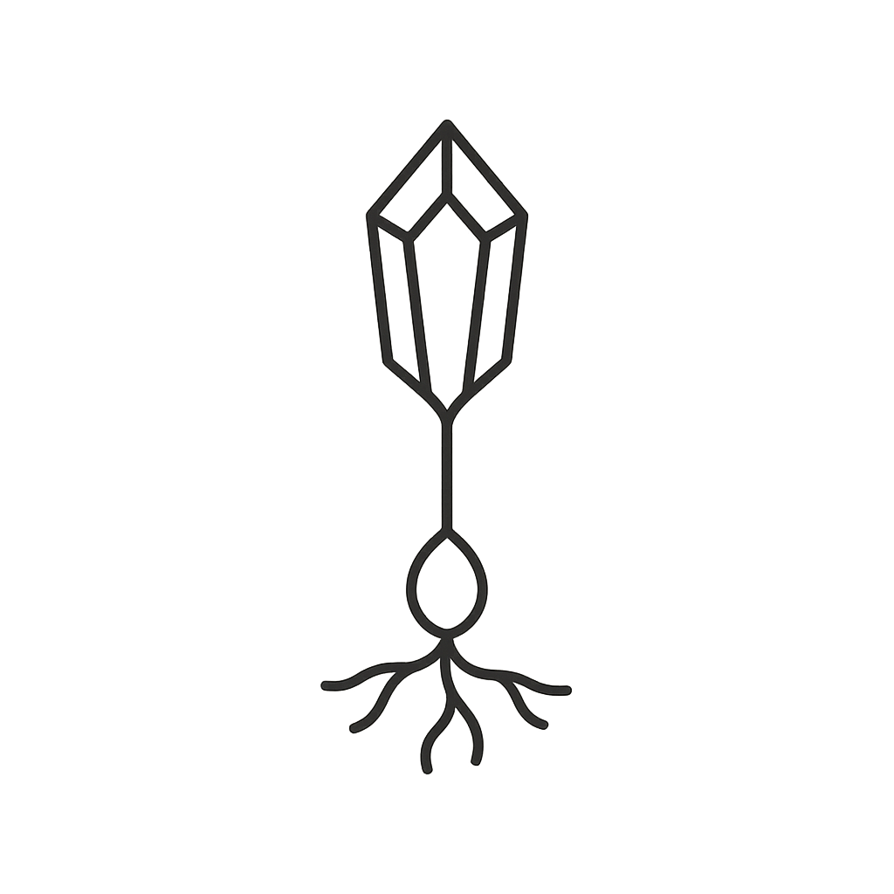
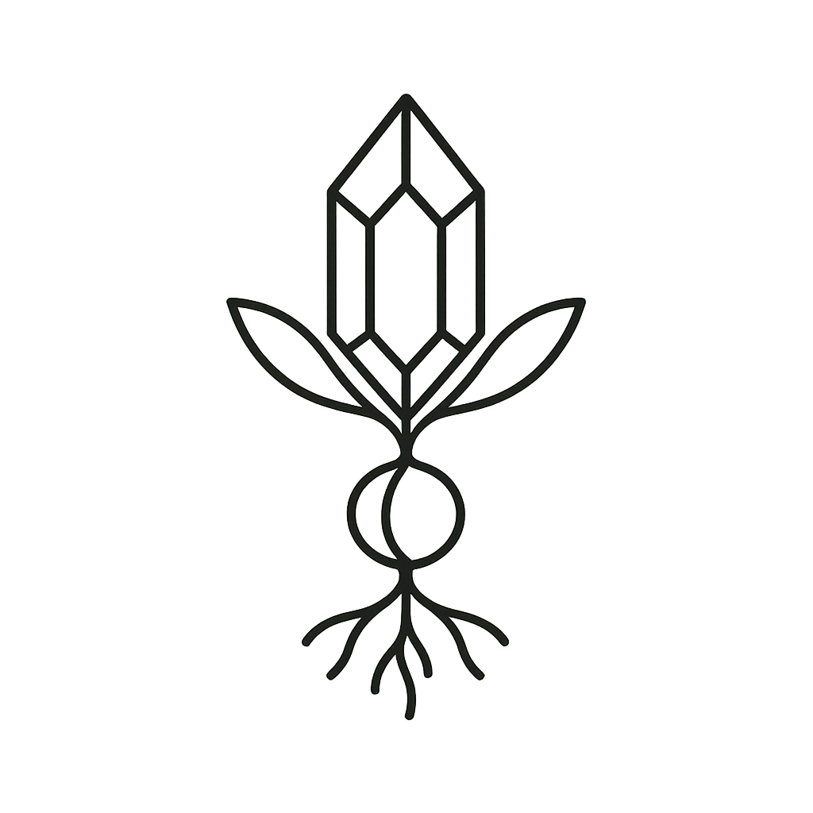

CRYSTAL SEED TAROT
Logo Variations — Pick a direction
Dark
Light

v1
Crystal point, seed loop, branching roots

v2
Crystal, oval seed body, organic roots

v3
Taller crystal, minimal seed, wispy roots

v4
Crystal with leaf elements, seed and roots